Ketcher is a tool to draw molecular structures and chemical reactions.
Ketcher is a tool to draw molecular structures and chemical reactions. Ketcher operates in two modes, the Server mode with most functions available and the client mode with limited functions available.
Ketcher consists of the following elements:
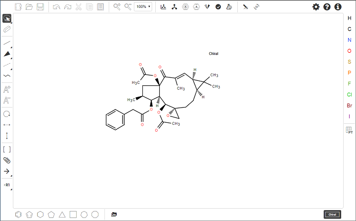
Note : Depending on the screen size, some tools on the Tool palette can be displayed in expanded or collapsed forms.
Using the Tool palette, you can
draw and edit a molecule or reaction by clicking on and dragging atoms, bonds, and other elements provided with the buttons on the Atoms toolbar and Tool palette;
delete any element of the drawing (atom or bond) by clicking on it with the Erase tool;
delete the entire molecule or its fragment by a lasso, rectangular, or fragment selection with the Erase tool;
draw special structures (see the following sections);
select the entire molecule or its fragment in one of the following ways (click on the button to see the list of available options):
in the expanded form
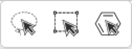
in the collapsed form
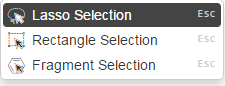
To select one atom or bond, click Lasso or Rectangle Selection tool, and then click the atom or bond.
To select the entire structure:
Select the Fragment Selection tool and then click the object.
Select the Lasso or Rectangle Selection tool, and then drag the mouse to select the object.
Ctrl-click with the Lasso or Rectangle Selection tool.
To select multiple atoms, bonds, structures, or other objects, do one of the following:
Shift-click with the Lasso or Rectangle Selection tool selects
some (connected or not) atoms/bonds.
With the Lasso or Rectangle Selection tool click and drag the mouse around the atoms, bonds, or structures that you want to select.
Note : Ctrl+Shift-click with the Lasso or Rectangle Selection tool
selects several structures.
You can use the buttons of the Main toolbar:
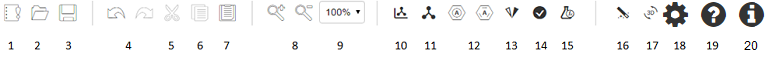
Clear Canvas (1) button to start drawing a new molecule; this command clears the drawing area;
Open… (2) and Save As… (3) buttons to import a molecule from a molecular file or save it to a supported molecular file format;
Undo / Redo (4), Cut (5), Copy (6), Paste (7), Zoom In / Out (8), and Scaling (9) buttons to perform the corresponding actions;
Layout button (10) to change the position of the structure to work with it with the most convenience;
Clean Up button (11) to improve the appearance of the structure by assigning them uniform bond lengths and angles.
Aromatize / Dearomatize buttons (12) to mark aromatic structures (to convert a structure to the Aromatic or Kekule presentation);
Calculate CIP button (13) to determine R/S and E/Z configurations;
Check Structure button (14) to check the following properties of the structure:
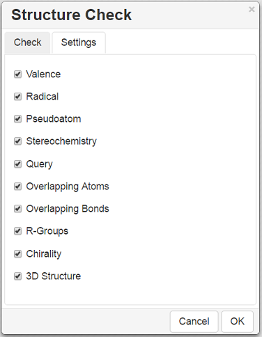
Calculated Values button (15) to display some properties of the structure:
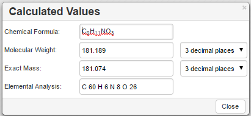
Recognize Molecule button (16) to recognize a structure in the image file and load it to the canvas;
3D Viewer button (17) to open the structure in the three-dimensional Viewer;
Settings button (18) to make some settings for molecular files:
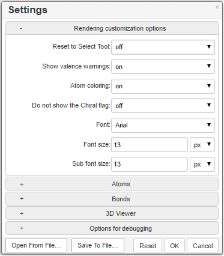
Help button (19) to view Help;
About button (20) to display version and copyright information of the program.
Note : Layout, Clean Up, Aromatize / Dearomatize, Calculate CIP, Check Structure, Calculated Values, Recognize Molecule and 3D View buttons are active only in the Server mode.
The structure appears in a modal window after clicking on the 3D Viewer button:
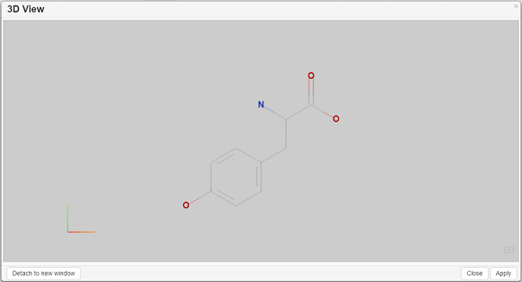
You can perform the following actions:
Rotate the structure holding the left mouse button;
Zoom In/Out the structure;
Ketcher Settings allow to change the appearance of the structure and background coloring.
“Lines” drawing method, “Bright” atom name coloring method and “Light” background coloring are default.
To draw/edit atoms you can:
select an atom in the Atoms toolbar and click inside the drawing area;
if the desired atom is absent in the toolbar, click on the 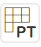 button to invoke the Periodic Table and click on the desired atom (available options: Single – selection of a single atom, List – choose an atom from the list of selected options (To allow one atom from a list of atoms of your choice at that position), Not List - exclude any atom on your list at that position).
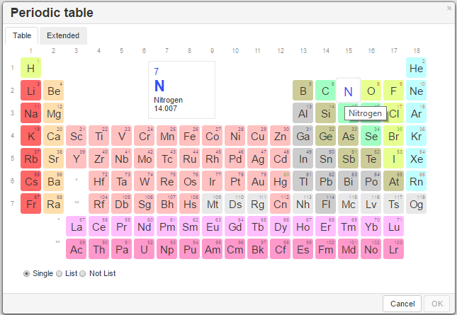
add an atom to the existing molecule by selecting an atom in the Atoms toolbar, clicking on an atom in the molecule, and dragging the cursor; the atom will be added with a single bond; vacant valences will be filled with the corresponding number of hydrogen atoms;
change an atom by selecting an atom in the Atoms toolbar and clicking on the atom to be changed; in the case a wrong valence thus appears the atom will be underlined in red;
change an atom by clicking on an existing atom with the Selection tool and waiting for a couple of seconds for the text box to appear; type another atom symbol in the text box:
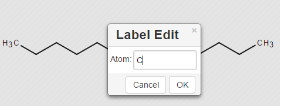
change the charge of an atom by selecting the Charge Plus or Charge Minus tool and clicking consecutively on an atom to increase/decrease its charge
change an atom or its properties by double-clicking on the atom to invoke the Atom Properties dialog (the dialog also provides atom query features):
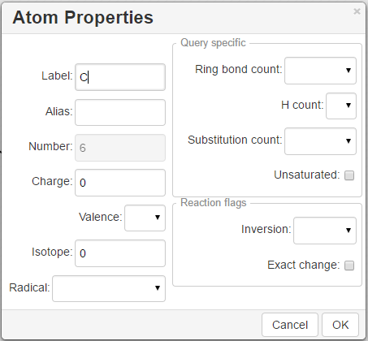
click on the Periodic Table button, open the Extended table and select a corresponding Generic group or Special Node:
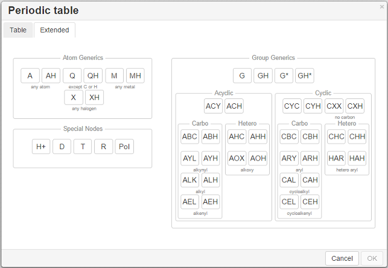
To draw/edit bonds you can:
Click an arrow on the Bond tool in the Tools palette to open the drop-down list with the following bond types:
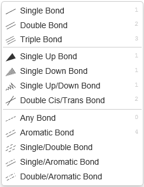
For the full screen format, the Bond tool from the Tools palette splits into three: _Single Bond,_Single Up Bond, and Any Bond,which include the corresponding bond types:
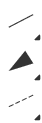
select a bond type from the drop down list and click inside the drawing area; a bond of the selected type will be drawn;
click on an atom in the molecule; a bond of the selected type will be added to the atom at the angle of 120 degrees;
add a bond to the existing molecule by clicking on an atom in the molecule and dragging the cursor; in this case you can set the angle manually;
change the bond type by clicking on it;
use the Chain Tool 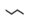 to draw consecutive single bonds;
change a bond or its properties by double-clicking on the bond to invoke the Bond Properties dialog:
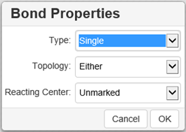
clicking on a drawn stereo bond changes its direction.
clicking with the Single Bond tool or Chain tool switches the bond type cyclically: Single-Double-Triple-Single.
Use the R-Group toolbox 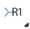 to draw R-groups in Markush structures:
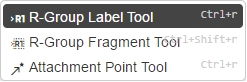
Selecting the R-Group Label Tool and clicking on an atom in the structure invokes the dialog to select the R-Group label for a current atom position in the structure:
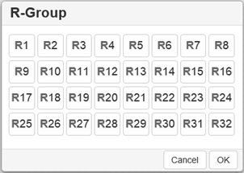
Selecting the R-Group label and clicking OK converts the structure into a Markush structure with the selected R-Group label:
Note : You can choose several R-Group labels simultaneously:
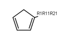
Particular chemical fragments that may be substituted for a given R-Group form a set of R-Group members. R-Group members can be any structural fragment, including functional groups and single atoms or atom lists.
To create a set of R-Group members:
Draw a structure to become an R-Group member.
Select the structure using the R-Group Fragment Tool to invoke the R-Group dialog; in this dialog select the label of the R-Group to assign the fragment to.
Click on OK to convert the structure into an R-Group member.
An R-Group attachment point is the atom in an R-Group member fragment that attaches the fragment to the initial Markush structure.
Selecting the Attachment Point Tool and clicking on an atom in the R-Group fragment converts this atom into an attachment point. If the R-Group contains more than one attachment point, you can specify one of them as primary and the other as secondary. You can select between either the primary or secondary attachment point using the dialog that appears after clicking on the atom:
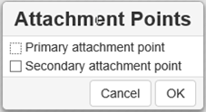
If there are two attachment points on an R-Group member, there must be two corresponding attachments (bonds) to the R-Group atom that has the same R-Group label. Clicking on OK in the above dialog creates the attachment point.
Schematically, the entire process of the R-Group member creation can be presented as:
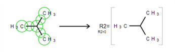
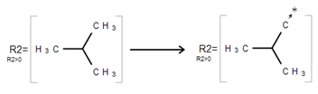
Ketcher enables one to add logic when using R-Groups. To access the R-Group logic:
Create an R-Group member fragment as described above.
Move the cursor over the entire fragment for the green frame to appear, then click inside the fragment. The following dialog appears:
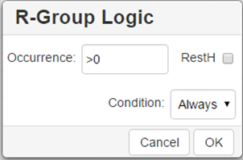
Specify Occurrence to define how many of an R-Group occurs. If an R-Group atom appears several times in the initial structure, you will specify Occurrence">n", n being the number of occurrences; if it appears once, you see "R1 > 0".
Specify H at unoccupied R-Group sites ( RestH ): check or clear the checkbox.
Specify the logical Condition. Use the R-Group condition If R(i) Then to specify whether the presence of an R-Group is dependent on the presence of another R-Group.
To mark S-Groups, use the S-Group tool 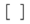 and the following dialog that appears after selecting a fragment with this tool:
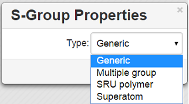
Available S-Group types:
Generic
Generic is a pair of brackets without any labels.
Multiple group
A Multiple group indicates a number of replications of a fragment or a part of a structure in contracted form.
SRU Polymer
The Structural Repeating Unit (SRU) brackets enclose the structural repeating of a polymer. You have three available patterns: head-to-tail (the default), head-to-head, and either/unknown.
Superatom
An abbreviated structure (abbreviation) is all or part of a structure (molecule or reaction component) that has been abbreviated to a text label. Structures that you abbreviate keep their chemical significance, but their underlying structure is hidden. The current version can't display contracted structures but correctly saves/reads them into/from files.
The Data S-Groups Tool is a separate tool for comfortable use with the accustomed set of descriptors (like Attached Data in Marvin Editor).
You can attach data to an atom, a fragment, a single bond, or a group. The defined set of Names and Values is introduced for each type of selected elements:
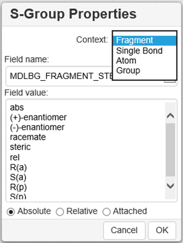
Select the appropriate S-Group Field Name.
Select or type the appropriate Field Value.
Labels can be specified as Absolute, Relative or Attached.
Use the Flip/Rotate tool 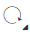 to change the structure display:
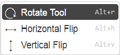
For the full screen format, the Flip/Rotate tool is split into separate buttons:
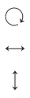
Rotate Tool
This tool allows rotating objects.
Select any bond on the structure and click Alt+H to rotate the structure so that the selected bond is placed horizontally. Select any bond on the structure and click Alt+V to rotate the structure so that the selected bond is placed vertically.
Flip Tool
This tool flips the objects horizontally or vertically.
To draw/edit reactions you can
draw reagents and products as described above;
use options of the Reaction Arrow Tool to draw an arrow and pluses in the reaction equation and map same atoms in reagents and products.
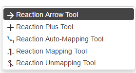
Note : Reaction Auto-Mapping Tool is available only in the Server mode.
You can add templates (rings or other predefined structures) to the structure using the Templates toolbar together with the Custom Templates button located at the bottom:
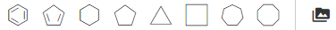
To add a ring to the molecule, select a ring from the toolbar and click inside the drawing area, or click on an atom or a bond in the molecule.
Rules of using templates:
Selecting a template and clicking on an atom in the existing structure adds the template to the structure connected with a single bond:
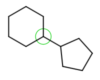
Selecting a template and dragging the cursor from an atom in the existing structure adds the template directly to this atom resulting in the fused structure:
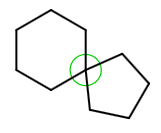
Dragging the cursor from an atom in the existing structure results in the single bond attachment if the cursor is dragged to more than the bond length; otherwise the fused structure is drawn.
Selecting a template and clicking on a bond in the existing structure created a bond-to-bond fused structure:

The bond in the initial structure is replaced with the bond in the template.
This procedure doesn't change the length of the bond in the initial structure.
Dragging the cursor relative to the initial bond applies the template at the corresponding side of the bond.
Note : The added template will be fused by the default attachment atom or bond preset in the program.
Note : User is able to define the attachment atom and bond by clicking the Edit button for template structure.
The Custom Templates button 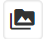invokes the scrolling list of templates available in the program; both built-in and created by user:
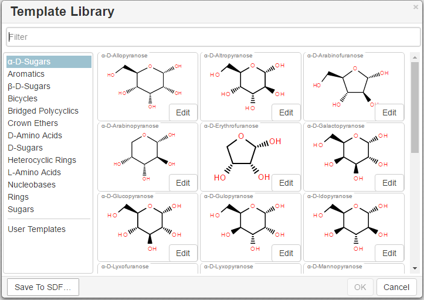
To create a user template:
Ketcher supports the following molecular formats that can be entered either manually or from files:
| Graph | MDL | Daylight SMILES | Daylight SMARTS | InChi | CML | |
|---|---|---|---|---|---|---|
| Offline mode | + | + | - | - | - | - |
| Reactions | + | + | + | - | - | + |
| R-Groups | + | + | - | - | - | - |
| S-Groups | + | + | - | - | - | + |
| Standalone (Open/Save as…) | + | + | - | - | - | - |
| Valency | + | + | + | + | + | - |
You can use the Open… and Save As… buttons of the Main toolbar to import a molecule from a molecular file or save it to a supported molecular file format. The Open Structure dialog enables one to either browse for a file (Server mode) or manually input, e.g., the Molfile ctable for the molecule to be imported:
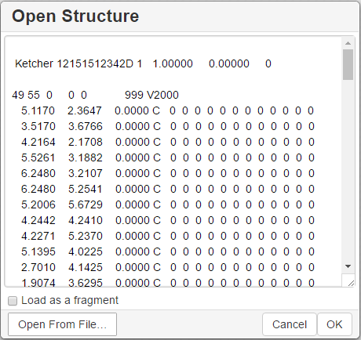
The Save Structure dialog enables one to save the molecular file:
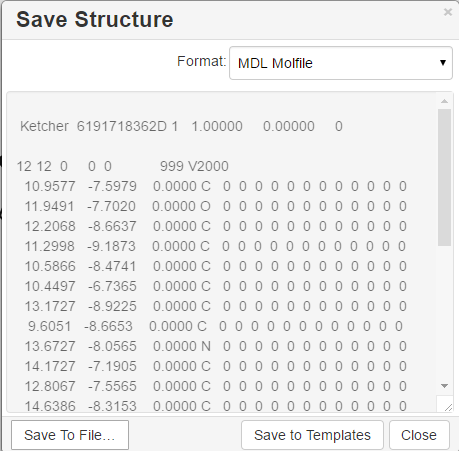
Note : In the standalone version only mol/rxn are supported for Open and mol/rxn/SMILES for Save.
You can use keyboard hotkeys (including Numeric keypad) for some features/commands of the Editor. To display the hotkeys just place the cursor over a toolbar button. If a hotkey is available for the button, it will appear in brackets after the description of the button.
| Key | Action |
|---|---|
Esc |
Switching between the Lasso/Rectangle/Fragment Selection tools |
Del |
Delete the selected objects |
0 |
Draw Any bond. |
1 |
Single / Single Up / Single Down / Single Up/Down bond. Consecutive pressing switches between these types. |
2 |
Double / Double Cis/Trans bond |
3 |
Draw a triple bond. |
4 |
Draw an aromatic bond. |
5 |
Charge Plus/Charge Minus |
A |
Draw any atom |
H |
Draw a hydrogen |
C |
Draw a carbon |
N |
Draw a nitrogen |
O |
Draw an oxygen |
S |
Draw a sulfur |
F |
Draw a fluorine |
P |
Draw a phosphorus |
I |
Draw an iodine |
T |
Basic templates. Consecutive pressing switches between different templates |
Shift+t |
Open template library |
Alt+r |
Rotate tool |
Alt+v |
Flip vertically |
Alt+h |
Flip horizontally |
Ctrl+g |
S-Group tool / Data S-Group tool |
Ctrl+d |
Align and select all S-Group data |
Ctrl+r |
Switching between the R-Group Label Tool/R-Group Fragment Tool/Attachment Point Tool |
Ctrl+Shift+r |
R-Group Fragment Tool |
Ctrl+Del |
Clear canvas |
Ctrl+o |
Open |
Ctrl+s |
Save As |
Ctrl+z |
Undo |
Ctrl+Shift+z |
Redo |
Ctrl+x |
Cut selected objects |
Ctrl+c |
Copy selected objects |
Ctrl+v |
Paste selected objects |
+ |
Zoom In |
- |
Zoom Out |
Ctrl+l |
Layout |
Ctrl+Shift+l |
Clean Up |
Ctrl+p |
Calculate CIP |
? |
Help |
Note : Please, use Ctrl+V to paste the selected object in
Google Chrome and Mozilla Firefox browsers.
Note 2 : Probably, you have forbidden access to the local storage. If you are using IE10 or IE11 and didn’t forbid access to local storage intentionally, you can pay attention here: https://stackoverflow.com/a/20848924